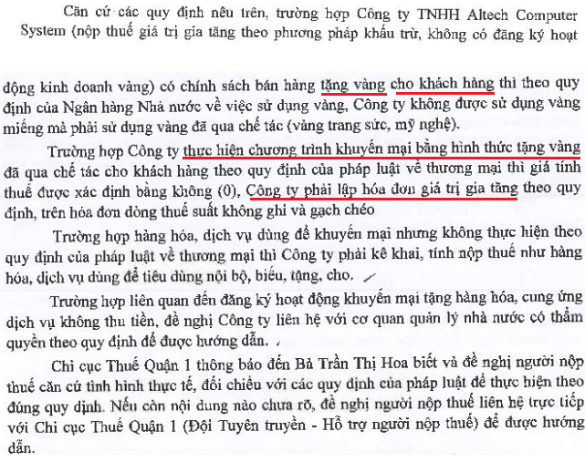
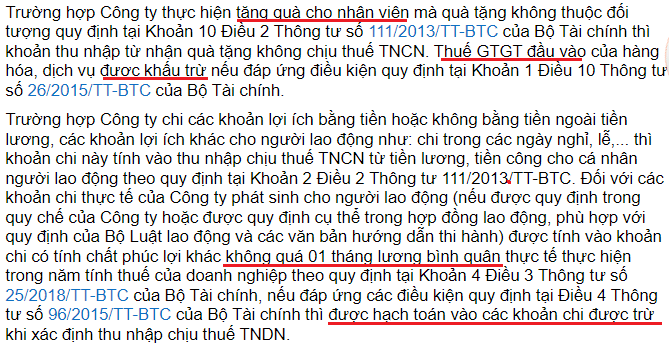

Quy định về hàng cho biếu tặng khách hàng, công nhân viên: Cách viết hóa đơn hàng biếu tặng khách hàng, nhân viên. Điều kiện để Chi phí quà tặng cho khách hàng, nhân viên được trừ khi tính thuế TNDN. Cách hạch toán hàng cho biếu tặng.
1. Quà tặng cho khách hàng, nhân viên có phải xuất hóa đơn:
Khoản 3. Sửa đổi, bổ sung khoản 1, khoản 2, khoản 3, khoản 6, khoản 7 và bổ sung khoản 9 vào Điều 4 Nghị định 123/2020/NĐ-CP như sau:
a) Sửa đổi, bổ sung khoản 1, khoản 2, khoản 3, khoản 6 và khoản 7 như sau:
Theo điểm b khoản 7 điều 1 Nghị định 70/2025/NĐ-CP
Khoản 7. Sửa đổi, bổ sung khoản 5, điểm a khoản 6, khoản 9, điểm c khoản 14 Điều 10 và bổ sung điểm l vào khoản 14, bổ sung khoản 17 vào Điều 10 Nghị định 123/2020/NĐ-CP như sau:
b) Sửa đổi, bổ sung điểm a khoản 6 như sau:
a.3) Số lượng hàng hóa, dịch vụ
"Trường hợp khuyến mại hàng hóa, dịch vụ theo quy định của pháp luật về thương mại; cho, biếu, tặng hàng hóa, dịch vụ phù hợp với quy định pháp luật thì được lập hóa đơn tổng giá trị khuyến mại, cho, biếu, tặng kèm theo danh sách khuyến mại, cho, biếu, tặng. Tổ chức lưu giữ hồ sơ có liên quan về chương trình khuyến mại, cho, biếu, tặng và cung cấp khi cơ quan có thẩm quyền yêu cầu và phải chịu trách nhiệm về tính chính xác nội dung thông tin giao dịch và cung cấp bảng tổng hợp chi tiết hàng hóa, dịch vụ khi cơ quan có thẩm quyền yêu cầu. Trường hợp khách hàng yêu cầu lấy hóa đơn theo từng giao dịch thì người bán phải lập hóa đơn giao cho khách hàng."
|
Khi tặng quà cho khách hàng vào dịp lễ, tết, hội nghị khách hàng để phục vụ cho hoạt động sản xuất kinh doanh, doanh nghiệp phải lập hóa đơn, tính kê khai nộp thuế GTGT như bán hàng hóa cho khách hàng.
- Trường hợp Công ty cho thuê Tài chính TNHH MTV Quốc tế Chaillease có phát sinh việc tặng quà khách hàng để phục vụ cho hoạt động sản xuất kinh doanh, khách hàng không có nhu cầu lấy hóa đơn thì cuối mỗi ngày công ty lập chung một hóa đơn GTGT ghi số tiền thể hiện trên dòng tổng cộng của bảng kê, ký tên và giữ liên giao cho người mua, các liên khác luân chuyển theo quy định (không phân biệt giá trị quà tặng trên 200.000đ hay dưới 200.000đ).
(Theo Công văn 5483/TCT-DNL ngày 28/11/2017 của Tổng cục thuế)
----------------------------------------------------------------------------------------
Căn cứ các quy định trên, Cục Thuế TP Hà Nội có ý kiến như sau:
Công ty phải lập hóa đơn đối với hàng hóa, dịch vụ dùng để cho, biếu tặng khách hàng, trên hóa đơn phải ghi đầy đủ nội dung theo quy định tại Điều 10 Nghị định số 123/2020/NĐ-CP. Giá tính thuế đối với hàng hóa, dịch vụ cho, biếu, tặng Công ty thực hiện theo hướng dẫn tại Khoản 3 Điều 7 Thông tư số 219/2013/TT-BTC ngày 31/12/2013 của Bộ Tài Chính.
(Theo Công văn 47499/CTHN-TTH ngày 29/9/2022 của Cụa thuế Hà Nội)
----------------------------------------------------------------------------------------
2. Đối với thuế GTGT đầu vào của hàng hóa, dịch vụ mua vào để cho, biếu, tặng khách hàng:
- Trường hợp phục vụ cho sản xuất kinh doanh hàng hóa, dịch vụ chịu thuế GTGT và đáp ứng điều kiện theo quy định tại Khoản 10, Điều 1 Thông tư số 26/2015/TT-BTC ngày 27/02/2015 của Bộ Tài chính thì Công ty được khấu trừ thuế GTGT đầu vào.
- Trường hợp phục vụ cho hoạt động sản xuất kinh doanh hàng hóa, dịch vụ không chịu thuế GTGT thì Công ty không được khấu trừ thuế GTGT đầu vào theo quy định tại Khoản 7, Điều 14 Mục 1 Chương III Thông tư 219/2013/TT-BTC ngày 31/12/2013 của Bộ Tài chính. 3. Thuế suất thuế GTGT đối với bó/lẵng hoa tươi là 10% theo quy định tại Điều 11 Thông tư 219/2013/TT-BTC ngày 31/12/2013 của Bộ Tài chính."
(Theo Công văn 11505/CT-TTHT ngày 26/03/2019 của cục thuế TP Hà Nội)
|
KẾT LUẬN:
- Khi xuất hàng cho biếu tặng (khách, hàng, công nhân viên ...), dù là mua tặng luôn hoặc mua về nhập kho rồi cho biếu tặng => Thì phải lập hóa đơn như bán hàng bình thường.
Xem thêm: Nguyên tắc lập hóa đơn giá trị gia tăng
-----------------------------------------------------------------------------------------------------------
Tặng Vàng - Bạc cho khách hàng có phải xuất hoá đơn?

Nguồn: https://mof.gov.vn/hoidapcstc/home/cthoidap/137161
----------------------------------------------------------------------------------
2. Giá tính thuế GTGT đối với hàng cho biếu tặng:
Theo Khoản 3, Điều 7 Thông tư số 219/2013/TT-BTC hướng dẫn về thuế GTGT:
“3. Đối với sản phẩm, hàng hóa, dịch vụ (kể cả mua ngoài hoặc do cơ sở kinh doanh tự sản xuất) dùng để trao đổi, biếu, tặng, cho, trả thay lương, là giá tính thuế GTGT của hàng hóa, dịch vụ cùng loại hoặc tương đương tại thời điểm phát sinh các hoạt động này.
KẾT LUẬN:
- Giá tính thuế đối với hàng cho, biếu, tặng là GIÁ BÁN hoặc Giá của hàng hóa tương đương
---------------------------------------------------------------------------------------
3. Chi phí quà cho biếu tặng khách hàng, công nhân viên đưa vào chi phí được trừ:
a. Nếu cho biếu tặng nhân viên:
"Các Khoản tiền lương, tiền thưởng cho người lao động không được ghi cụ thể Điều kiện được hưởng và mức được hưởng tại một trong các hồ sơ sau: Hợp đồng lao động; Thoả ước lao động tập thể; Quy chế tài chính của Công ty, Tổng công ty, Tập đoàn; Quy chế thưởng do Chủ tịch Hội đồng quản trị, Tổng giám đốc, Giám đốc quy định theo quy chế tài chính của Công ty, Tổng công ty”
(Theo Khoản 2 Điều 3 Thông tư 25/2018/TT-BTC)
“- Khoản chi có tính chất phúc lợi chi trực tiếp cho người lao động như: chi đám hiếu, hỷ của bản thân và gia đình người lao động; chi nghỉ mát, chi hỗ trợ Điều trị; chi hỗ trợ bổ sung kiến thức học tập tại cơ sở đào tạo; chi hỗ trợ gia đình người lao động bị ảnh hưởng bởi thiên tai, địch họa, tai nạn, ốm đau; chi khen thưởng con của người lao động có thành tích tốt trong học tập; chi hỗ trợ chi phí đi lại ngày lễ, tết cho người lao động; chi bảo hiểm tai nạn, bảo hiểm sức khỏe, bảo hiểm tự nguyện khác cho người lao động (trừ Khoản chi mua bảo hiểm nhân thọ cho người lao động, bảo hiểm hưu trí tự nguyện cho người lao động hướng dẫn tại điểm 2.11 Điều này) và những Khoản chi có tính chất phúc lợi khác. Tổng số chi có tính chất phúc lợi nêu trên không quá 01 tháng lương bình quân thực tế thực hiện trong năm tính thuế của doanh nghiệp.”
Việc xác định 01 tháng lương bình quân thực tế thực hiện trong năm tính thuế của doanh nghiệp được xác định bằng quỹ tiền lương thực hiện trong năm chia (:) 12 tháng.
Trường hợp doanh nghiệp hoạt động không đủ 12 tháng thì: Việc xác định 01 tháng lương bình quân thực tế thực hiện trong năm tính thuế được xác định bằng quỹ tiền lương thực hiện trong năm chia (:) số tháng thực tế hoạt động trong năm.
Quỹ tiền lương thực hiện là tổng số tiền lương thực tế đã chi trả của năm quyết toán đó đến thời hạn cuối cùng nộp hồ sơ quyết toán theo quy định (không bao gồm số tiền trích lập quỹ dự phòng tiền lương của năm trước chi trong năm quyết toán thuế).
(Căn cứ Điều 4 Thông tư 96/2015/TT-BTC và Điều 3 Thông tư 25/2018/TT-BTC của Bộ Tài chính)
---------------------------------------------------------------------
Tặng quà Tết nguyên đán cho nhân viên:
"Căn cứ các hướng dẫn trên, trường hợp năm 2017, Công ty cổ phần tư vấn và xây dựng Sao Việt có phát sinh chi phí mua hàng hóa bên ngoài để làm quà trung thu, quà tết cho cán bộ, công nhân viên không dùng quỹ phúc lợi thì nếu khoản chi phí mua hàng hóa dùng làm quà cho nhân viên không vượt quá 01 tháng lương bình quân thực tế thực hiện trong năm tính thuế theo quy định thì Công ty cổ phần tư vấn và xây dựng Sao Việt được tính vào chi phí được trừ khi xác định thu nhập chịu thuế TNDN và được khấu trừ thuế GTGT đầu vào tương ứng với phần tính vào chi phí được trừ, đồng thời Công ty phải lập hóa đơn GTGT theo quy định."
(Theo Công văn 4003/TCT-CS ngày 17/10/2018 của Tổng cục thuế)

(Theo Công văn 19293/CTHN-TTHT ngày 6/4/2023 của Cục thuế TP. Hà Nội)
"Trường hợp Công ty theo trình bày có mua hàng hóa tặng cho người lao động của Công ty (bánh trung thu, lịch treo tường...) thì khi tặng sản phẩm, Công ty phải lập hóa đơn như bán hàng hóa thông thường, kê khai nộp thuế GTGT theo quy định.
Đối với các khoản chi du lịch nghỉ mát, tiệc tất niên cuối năm, khám sức khỏe định kỳ, bảo hiểm sức khỏe cho nhân viên, Công ty không phải lập hóa đơn."
(Công văn số 9933/CT-TTHT ngày 14/10/2016 của Cục Thuế TP. HCM )
----------------------------------------------------------------------------------------------------------
b. Nếu cho biếu tặng khách hàng:
1. Trừ các khoản chi không được trừ nêu tại Khoản 2 Điều này, doanh nghiệp được trừ mọi khoản chi nếu đáp ứng đủ các điều kiện sau:
a) Khoản chi thực tế phát sinh liên quan đến hoạt động sản xuất, kinh doanh của doanh nghiệp.
b) Khoản chi có đủ hóa đơn, chứng từ hợp pháp theo quy định của pháp luật.
c) Khoản chi nếu có hóa đơn mua hàng hóa, dịch vụ từng lần có giá trị từ 20 triệu đồng trở lên (giá đã bao gồm thuế GTGT) khi thanh toán phải có chứng từ thanh toán không dùng tiền mặt.
(Theo Điều 4 Thông tư số 96/2015/TT-BTC)
-------------------------------------------------------------------------------------
Tặng khách hàng, nhân viên bánh trung thu:
"Căn cứ các quy định trên, trường hợp Công ty TNHH Haseko HimlamBC nhân dịp Tết Trung thu có hoạt động tri ân khách hàng và khuyến khích động viên tinh thần làm việc của người lao động trong Công ty (theo quy chế nội bộ đã ban hành) dưới hình thức mua bánh trung thu để tặng khách hàng và cho người lao động thì:
1) Về thuế GTGT
Khi trao tặng bánh trung thu cho khách hàng và nhân viên, Công ty phải xuất hóa đơn GTGT, trên hóa đơn ghi đầy đủ các chỉ tiêu và tính thuế GTGT như hóa đơn xuất bán hàng hóa cho khách hàng. Trong đó, giá tính thuế GTGT là giá tính thuế của hàng hóa cùng loại hoặc tương đương tại thời điểm phát sinh các hoạt động này.
2) Về thuế TNDN
Khoản chi phí mua bánh trung thu tặng khách hàng và cho nhân viên của Công ty sẽ được trừ vào chi phí hợp lí khi xác định thu nhập chịu thuế TNDN nếu đáp ứng các điều kiện quy định tại Điều 4 Thông tư số 96/2015/TT-BTC được trích dẫn trên đây."
(Theo Công văn 79109/CT-TTHT ngày 07/12/2017 của Cục thuế TP Hà Nội)
------------------------------------------------------------------------------------------
c. Nếu biếu tặng khách hàng là cá nhân:
- Căn cứ vào các quy định trên, trường hợp Công ty cho, tặng hiện vật cho khách hàng không thu tiền mà hiện vật là tài sản phải đăng ký sở hữu hoặc đăng ký sử dụng với cơ quan quản lý nhà nước thì thu nhập mà khách hàng nhận được thuộc diện chịu thuế thu nhập cá nhân từ quà tặng.
- Trường hợp Công ty thực hiện chương trình khuyến mại theo quy định tại khoản 5, khoản 6 Điều 92 của Luật Thương mại thì khoản tiền/hiện vật cá nhân nhận được từ hoạt động trúng thưởng vượt trên 10 triệu đồng thuộc diện chịu thuế thu nhập cá nhân từ trúng thưởng.
(Theo Công văn 3929/TCT- TNCN ngày 23/09/2015 của Tổng cục thuế)
Xem thêm: Cách tính thuế TNCN từ quà tặng
-------------------------------------------------------------------------------------------
4. Cách hạch toán hàng cho biếu tặng khách hàng, nhân viên:
a. Hạch toán bên cho biếu tặng:
+) Nếu mua về cho biếu tặng ngay, không nhập kho:
Nợ TK 641 (theo Thông tư 99); 642 (theo Thông tư 133): Khi tặng khách toán bên ngoài DN
Nợ TK 642 (theo Thông tư 133): Khi tặng quà cho nhân viên
Nợ TK 133: Thuế GTGT được khấu trừ (nếu có)
Có TK: 111, 112, 331
Có TK 3331
+) Nếu mua về nhập kho, sau đó xuất cho biếu tặng
- Khi mua hàng về:
Nợ TK 156
Nợ TK 1331: Thuế GTGT được khấu trừ
Có 111, 112, 331...
- Khi xuất cho biếu tặng:
Nợ 641/642/622/623/627 (theo Thông tư 99) - Khi tặng quà cho nhân viên của từng bộ phận
Nợ TK 641 (theo Thông tư 99); 642 (theo Thông tư 133) - Khi tặng quà cho khách hàng
Có các TK 156
Có TK 3331 - Thuế GTGT phải nộp.
Thuế GTGT của hàng cho biếu tặng được khấu trừ:
"5. Thuế GTGT đầu vào của hàng hóa (kể cả hàng hóa mua ngoài hoặc hàng hóa do doanh nghiệp tự sản xuất) mà doanh nghiệp sử dụng để cho, biếu, tặng, khuyến mại, quảng cáo dưới các hình thức, phục vụ cho sản xuất kinh doanh hàng hóa, dịch vụ chịu thuế GTGT thì được khấu trừ."
(Theo điều 14 Thông tư 219)
-----------------------------------------------------------------------------------------------
b. Hạch toán hàng cho biếu tặng được nhận (Bên nhận):
- Trường hợp hàng được cho biếu tặng là hàng nội địa
- Trường hợp hàng được cho biếu tặng là hàng nhập khẩu phi mậu dịch (hàng nhập khẩu không mang tính chất thương mại)
- Ghi nhận trị giá lô hàng tặng:
- Nộp thuế khâu nhập khẩu:
- Nếu đã ghi nhận giá trị hàng cho biếu tặng theo giá thị trường, giá Hải quan thì phần thuế nhập khẩu tính vào chi phí quản lý doanh nghiệp
==> Vì không phải trả tiền (Không có chứng từ thanh toán) nên DN bên nhận sẽ không được khấu trừ thuế GTGT đầu vào theo Công văn 633/TCT-CS ngày 13/2//2015 của Tổng cục thuế gửi Chi cục thuế Hải phòng.
-----------------------------------------------------------------------------------------
Công ty TNHH Tư vấn & Đào tạo Diệu Tâm xin chúc các bạn thành công!